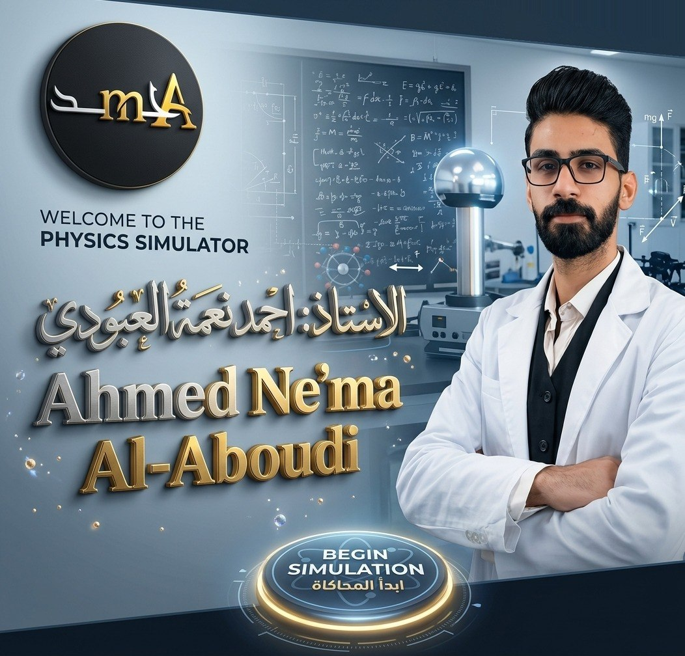

ابدأ المحاكاة — الدخول إلى التجارب
اضغط «ابدأ المحاكاة» للدخول إلى التجارب
أم
مختبر الفيزياء الافتراضي
الفيزياء — الصف السادس الإعدادي (الثاني عشر)
١
الفصل الأول — المتسعات
السعة، العوازل، الشحن والتفريغ، التوالي والتوازي
٢
الفصل الثاني — الحث الكهرومغناطيسي
الفيض، قانون فارادي ولنز، المحوّلات
إعداد:
الأستاذ أحمد نعمة العبودي
⌂ الواجهة الرئيسية
جارٍ تحميل تجارب الفصل الأول…
جارٍ تحميل تجارب الفصل الثاني…